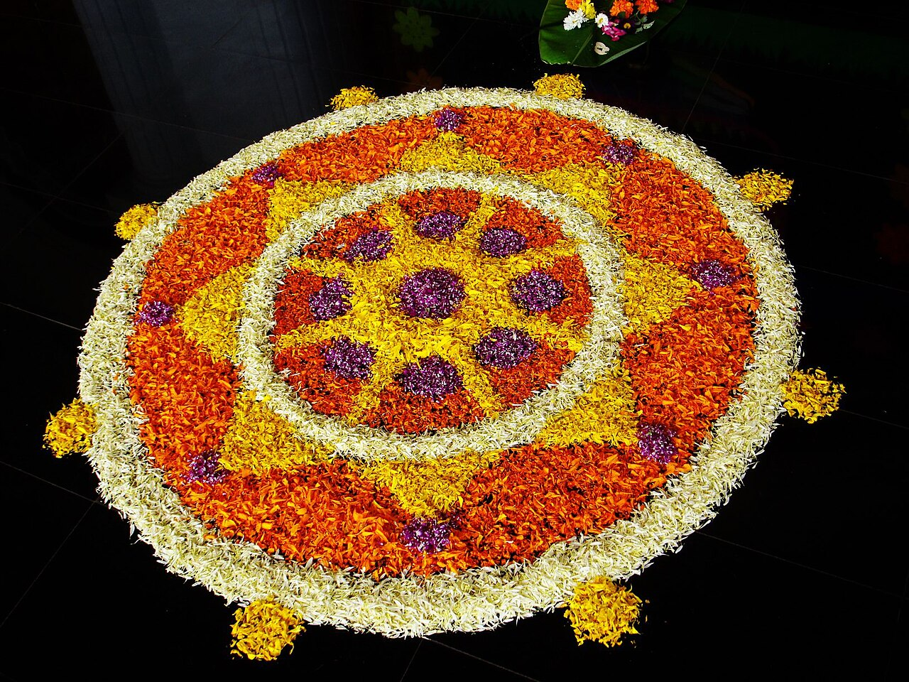

Onam, the national festival of Keralam, is an annual harvest and Hindu cultural festival celebrated mostly by the people of Keralam and is traditionally associated with the legend of the benevolent Asura King Mahabali, who once ruled Keralam, returning each year to visit his people.A major annual event for Malayalis, it is the official festival of the state and includes a spectrum of cultural events. In 1961, during the tenure of Chief Minister Pattom Thanu Pillai, Onam was officially declared the national festival of Keralam. However, in the following year, large-scale celebrations were curtailed due to the Indo-China War. Despite this interruption, the government’s declaration marked a turning point, and from then onwards Onam gradually developed into a grand public festival celebrated across the state and among the Malayali diaspora.